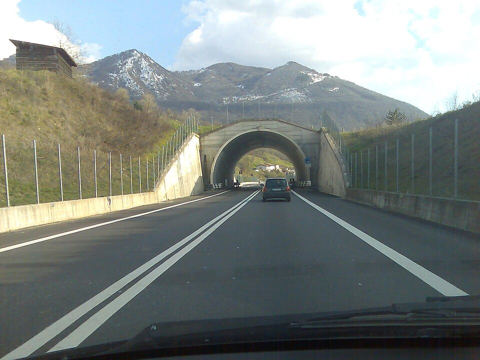

Détails de l'Asservissement
Ce démonstrateur illustre le fonctionnement d'une boucle fermée de régulation : l'écart avec la trajectoire idéale est mesuré via un réseau de capteurs infrarouges, dont le signal est traité par un régulateur PID embarqué afin de générer une commande de correction moteur continue.
Simule un écart transversal brutal (dérive latérale) pour observer en temps réel le travail d'amortissement et le temps d'établissement (réponse indicielle) du régulateur sur le tracé de l'erreur.
Compétences démontrées
Validation de méthodes d'instrumentation analogique, synthétisation de lois de commande, compréhension approfondie des perturbations système, et capacité à instrumenter une boucle de validation visuelle.
Technologies
Arduino Uno Capteurs IR QRE1113 Pont H L298N C/C++ PWMApplication industrielle
Le contrôle de trajectoire par asservissement est au cœur des systèmes logistiques tels que les véhicules à guidage automatique (AGV), de la robotique mobile industrielle et des systèmes de guidage avancés type Lane Keeping Assist (LKA). Cette architecture de base reste incontournable pour garantir stabilité et robustesse face aux environnements non-maîtrisés.
🚘 ANALOGIE — LKA / Lane Keeping Assist
Système de maintien de voie en temps réel — analogie directe avec le projet embarqué.
